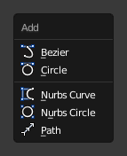

Primitives¶

Add Curve menu.
In Object Mode, the Add Curve menu, Blender provides five different curve primitives:
Bézier Curve¶
Adds an open 2D Bézier curve with two control points.
Bézier Circle¶
Adds a closed, circle-shaped 2D Bézier curve (made of four control points).
NURBS Curve¶
Adds an open 2D NURBS curve, with four control points, with Uniform knots.
NURBS Circle¶
Adds a closed, circle-shaped 2D NURBS curve (made of eight control points).
Path¶
Adds a NURBS open 3D curve made of five aligned control points, with Endpoint knots and the Curve Path setting enabled.